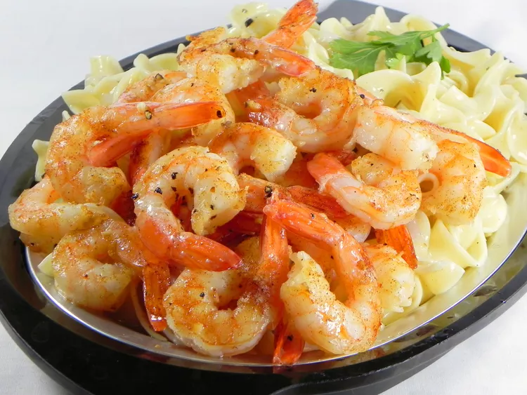

Shrimp, butter, olive oil, and garlic hit the oven. Deliciousness ensues. "Loved, loved, loved this," raves naples34102. "The seasonings are classic and perfect but it was the cooking method that particularly impressed me. I generally prepare shrimp this way in a skillet on the stove top, but this was just too easy!"
30 medium shrimp - peeled and deveined
2 tablespoons olive oil
2 tablespoons butter, melted
2 cloves garlic, minced
½ teaspoon kosher salt
¼ teaspoon ground black pepper